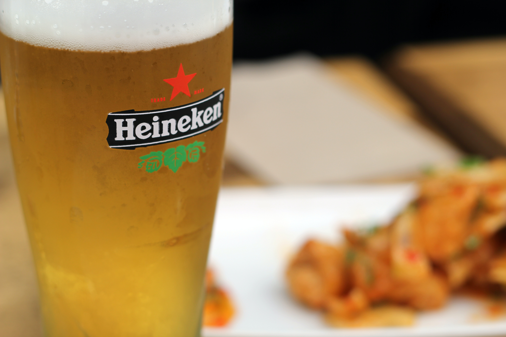
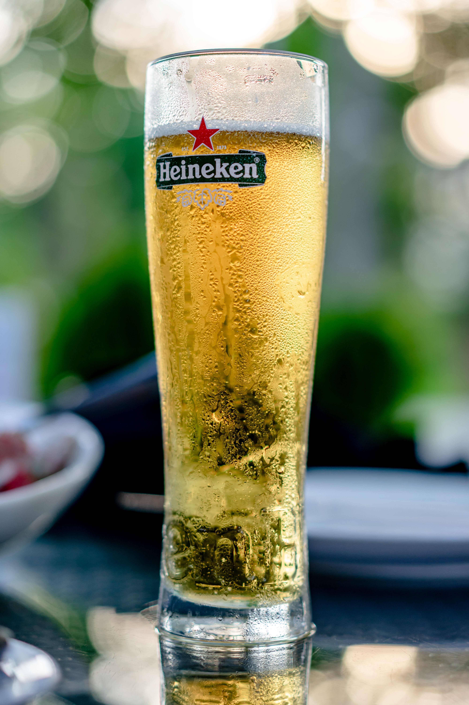

Sobre nós

Nossa história se iniciou em 1864, quando Gerard Adriaan Heineken adquiriu uma pequena cervejaria em Amsterdã, no coração da Holanda. Cinco anos depois, em 1869, Gerard decidiu mudar o processo de produção da cerveja, adotando o método alemão de baixa fermentação. O resultado foi um líquido de altíssima qualidade, apreciado em todo o mundo há mais de um século. Assim nascia a primeira cerveja Heineken, batizada desta maneira para provar ao mundo a confiança de nosso fundador em seu produto.
Nosso valores e princípios

Em todas as suas operações, o Grupo HEINEKEN orienta-se por valores solidamente construídos e que contribuem para que o DNA de qualidade que nos move esteja em todas as nossas esferas de atuação.
Em uma época em que os negócios acontecem em um ritmo dinâmico e em constante mudança, esses valores permitem que a companhia mantenha sua força e sua consistência para crescer de maneira sustentável, respeitosa, ética e divertida.Aqui, acreditamos que oferecer um ambiente transparente, diverso e aberto ao diálogo a todas as pessoas que conosco se relacionam é primordial, por isso, além de nossos valores, temos políticas orientadoras, investimentos e inúmeros programas de desenvolvimento de pessoas, tanto no Brasil como nos demais países em que o Grupo HEINEKEN atua. Nosso objetivo é levar, por meio do nosso time de estrelas, os melhores produtos à toda sociedade, de uma maneira responsável e ética, com muito sabor e moderação!